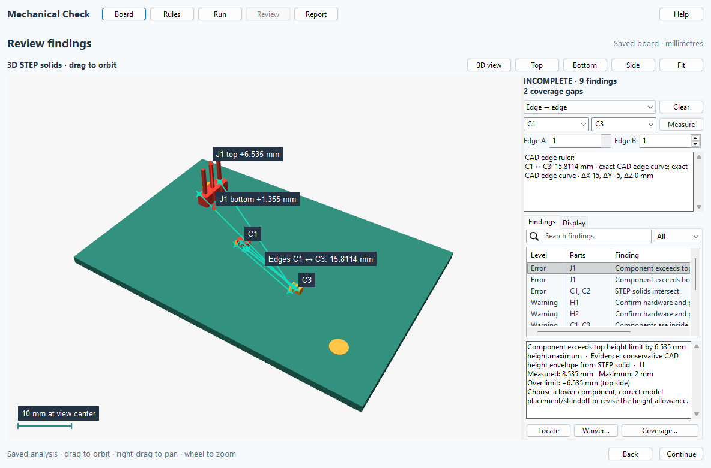
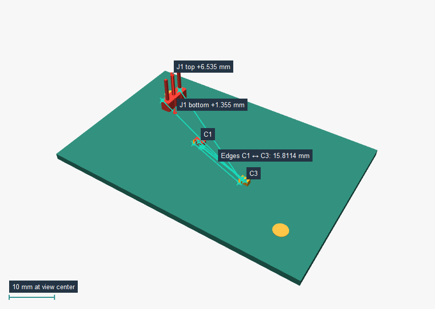
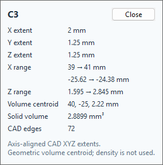
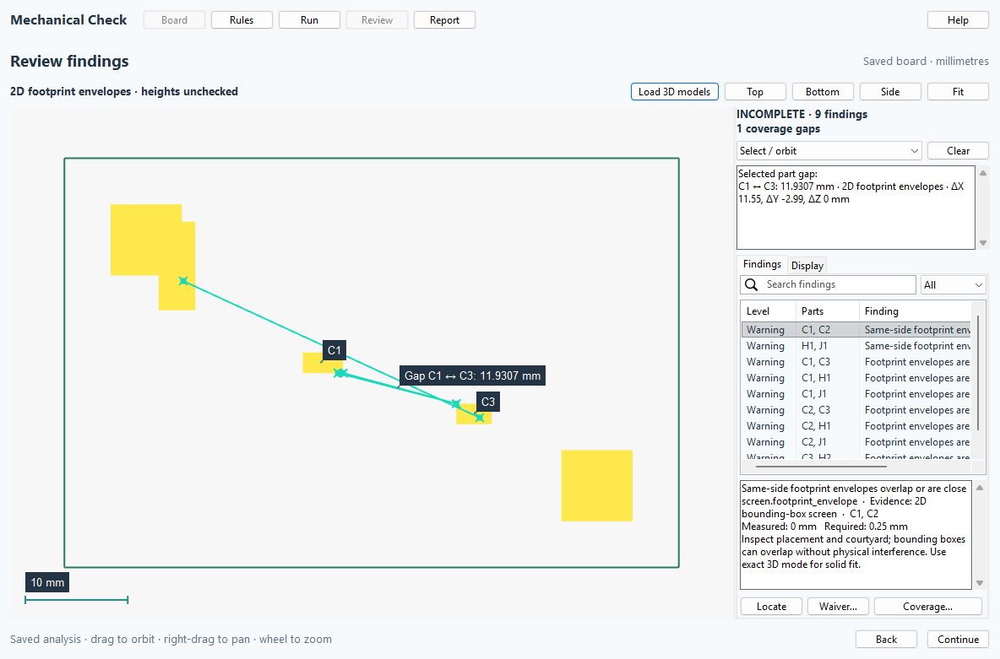

Review physical fit and model coverage using local files. Nothing is sent to a server.

The IPC launcher uses the official kicad-python client to find the saved board, then opens a separate local window using KiCad 10 Python. If context is unavailable, select the file in that window. Enable KiCad's API in Preferences to use automatic context.
The native viewer requires pcbnew, wxPython and PyOpenGL. Exact solids require a separate FreeCAD Python installation with FreeCAD, Part and Import. No geometry kernel is downloaded by the plugin.
Run python launch.py --doctor to see discovered executable paths. Override discovery with WAYRICAD_MECHANICAL_KICAD_CLI, WAYRICAD_MECHANICAL_KICAD_PYTHON and WAYRICAD_MECHANICAL_FREECAD_PYTHON. Finding executables does not prove all runtime modules are available.
All lengths are millimetres. Height zones use KiCad board XY coordinates. Enclosure STEP models and 3D keepout bounds use exported CAD XYZ coordinates, with board export origin 0×0 mm; align external geometry before checking. Keepout bounds are [xmin, ymin, zmin, xmax, ymax, zmax]. Use the generated default rules as the settings reference: python launch.py --init-rules rules.json.
STEP component collisions, minimum surface separation, enclosure fit and board penetration use actual solid geometry. Hardware, pad proximity, independent XY/Z allowances and nozzle access use conservative envelopes and require engineering review. Missing/unresolved/hidden/invalid models, absent kernels or unconfirmed mounting intent prevent a complete pass. Waivers require a reason and are scoped to board/model hashes and physical rules.
This checks static assembly fit. It does not replace electrical DRC or model machine trajectories, cable bending, rigid-flex folding, tolerance stacks or solder processes. KiCad 10 is the extraction engine. KiCad 11 IPC installation is forward-oriented but unverified; native KiCad 10 Python remains required until extraction is ported.
After Run, choose Minimum part gap. Click two different parts or type their references in Part A and Part B, then Measure. Exact 3D uses cached transformed solids to find the shortest surface distance and its two witness points. The readout shows evidence and X/Y/Z differences in millimetres. A zero distance means touching or overlapping; positive overlap volume, when measured, is shown separately. Missing geometry stays unavailable. Changed source boards, models or enclosures require a new Run before live queries.
Point → point measures straight-line distance between two picked tessellated surface locations, including points on the same part. This is not the minimum part clearance. Green rulers persist; hover shows an orange closest-approach witness for the nearest eligible part in the saved analysis. Clear rulers clears the overlays. Lines and labels remain visible through surfaces: use cutaway or sections to inspect the surrounding geometry.
Fit board restores the whole assembly. Top, Bottom and Side use orthographic projection with a millimetre scale. Iso uses perspective; its scale is marked at view center. Display contains the grid, selected/hovered reference labels, optional isolation and Save view. Save view reads the actual rendered RGB buffer to an opaque PNG. Only active/hovered rulers get labels; older lines remain, and crowded labels are omitted. Quick 2D displays the saved Edge.Cuts as unfilled contours, including cutouts and sampled curves, and measures same-side footprint envelopes. Invalid outlines stay unavailable.
HTML/JSON exports preserve measured pairs and point rulers. Offline HTML displays saved pair measurements and supports new point rulers. A pair without saved geometry evidence requires a new native run; a nearest known measured pair is labelled distinctly from a proven nearest part. Reopened reports do not contain the private live geometry cache.

In Select / orbit, click a part to open its compact dimension card: CAD X/Y/Z extents and ranges, solid volume, geometric volume centroid and CAD edge count when available. Extents are axis aligned in the saved assembly coordinates, not local oriented or manufacturing dimensions. Missing metrics remain unavailable.
The selector offers Minimum part gap, Point → point, Edge → edge, Point → edge and Body center → center. In exact 3D, hover highlights a selectable CAD edge. Click two edges, including different edges of one body, or enter part references and one-based Edge A/B numbers. For point-to-edge, click a surface point first, then click an edge or enter Part B / Edge B. For centers, click two bodies or select their references. The readout includes the distance, CAD XYZ differences and source evidence.
Edge distances use actual CAD curves from the immutable analysis BREP copies. Picked surface points are approximated by the display tessellation. Body centers use geometric volume centroids with uniform volume weighting; density is not supplied, so these are not mass centers. Curve samples are for display/picking only and are bounded; edges without samples remain queryable by number. Old reports lacking feature inspection need a new native Run. Offline reports display saved feature rulers; new arbitrary exact curve queries require the native CAD cache.

On Rules, set Max top height and Max bottom height in millimetres. Both limits apply to every primary component solid, including protrusions on the opposite side of its mounting face. Height is measured outward from each PCB face, including standoff: top is max(0, zmax − board thickness), bottom is max(0, −zmin). Height uses CAD bounds, which can conservatively enclose curved geometry; its markers are envelope locations rather than closest-surface witnesses. A zero limit permits no protrusion. Quick 2D and missing models cannot establish height.
Violating parts turn red. Labels such as J1 top +0.8 mm show the excess; select a finding or hover/click its part for the measured height and maximum. Labels avoid overlap, with priority for selected/hovered parts; all findings remain in the table. Proximity warning is a separate soft gap threshold, with 0 disabling it. Exact 3D uses component surface gaps, while Quick 2D uses same-side footprint envelopes. Collisions and hard-clearance findings take precedence. Amber parts indicate active warnings; select the finding for its witness line and threshold. Display can hide Violation / proximity markers. Waived findings retain their evidence without active part markers.
python launch.py board.kicad_pcb --rules rules.json --output reports
Exit codes: 0 passed (possibly with documented waivers); 1 configuration/runtime error; 2 findings need review; 3 incomplete coverage. Reopen a JSON report with python launch.py --review report.json using KiCad Python.
On Board, choose a second saved .kicad_pcb, enter its X/Y/Z translation in millimetres and rotation about CAD Z relative to the current board STEP export origin, then choose Exact 3D solids. The second board is exported separately and transformed only in the temporary analysis. Its components are labelled Other:REF. A collision is an exact STEP intersection; a close approach is an exact shortest surface distance below the configured 3D clearance. Missing models or substrate solids make coverage incomplete. Use Review → Cutaway PCB and choose X, Y, Z or Custom to clip both boards through the selected finding. Set the Custom normal on Rules before Run; 2D section shows FreeCAD intersection curves at the finding plane for that direction. The section offset scans the 3D view, while the exact 2D curves represent the original finding plane. The offline HTML report also displays these curves. Save and rerun after editing either board or changing placement. This is static assembly fit, not mating or motion simulation.
Select Quick 2D footprint screen on Board. It needs no FreeCAD or STEP model files. Same-side footprint envelopes are checked against horizontal allowance; DNP filtering and report exports remain available. This is conservative bounding-box screening, not exact collision checking. It always reports INCOMPLETE because heights, enclosures, hardware and assembly access are unchecked. Exact 3D solids retains the full workflow.
